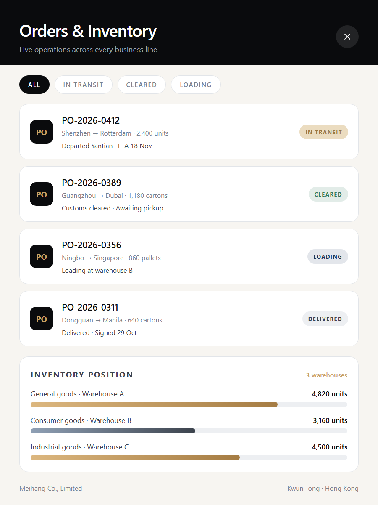
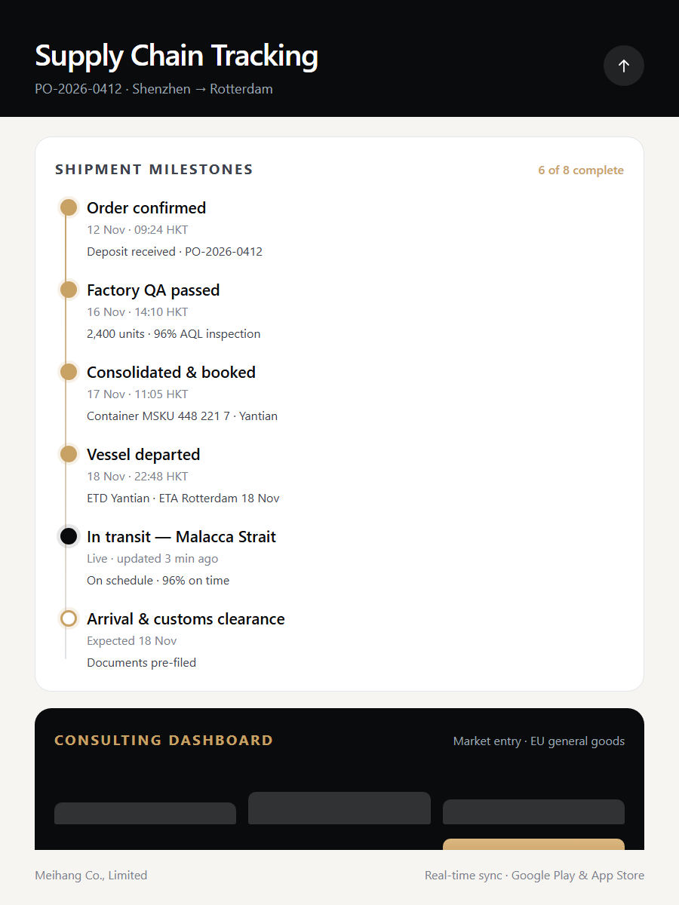

International trade
We act as the trading counterparty between manufacturers and buyers. Our desk handles commercial terms, inspection, documentation and settlement across Mainland China, Southeast Asia, Europe and the Americas.
International trade, marketing consultancy, wholesale and import/export of general goods, supply chain support services — delivered by one team and coordinated through one application.
Each line is run by specialists, and every line shares the same data, the same documentation standards and the same mobile application.
We act as the trading counterparty between manufacturers and buyers. Our desk handles commercial terms, inspection, documentation and settlement across Mainland China, Southeast Asia, Europe and the Americas.
Market research, competitor mapping, pricing structure, channel strategy and campaign planning — delivered as decision-ready reports, not slide decks.
Everyday, industrial and consumer goods sourced from qualified factories, supplied to distributors, retailers and wholesalers with consolidated shipping and clear unit economics.
Order orchestration, stock planning, customs documentation and freight coordination. One operating layer keeps every supplier, shipment and customer on the same timeline.
These are the operational disciplines behind every shipment — and the reason our quotes hold up in practice.
Supplier qualification, sample approval, quality inspection and dispatch planning for every production run.
Certificates of origin, customs declarations, HS classification and destination-market paperwork prepared accurately.
Distributor management, wholesale account servicing and retail execution support in every active market.
Air, sea and ground routing, consolidation and last-mile handover with live milestone tracking.
Our mobile application is published on Google Play and the Apple App Store, and it covers the entire business scope: International trade, marketing consultancy, wholesale and import/export of general goods, supply chain support services.



A repeatable five-step path, visible to you at every stage through the mobile application.
You send the category, specification, volume and destination. Our trade desk responds within one business day with a feasibility view and indicative commercial terms.
We shortlist qualified factories, run sample approval and quality inspection, and confirm specification, packaging and lead time before anything is committed.
Commercial terms, HS classification, certificates of origin and customs paperwork are prepared and reviewed — compliance is a step, not a postscript.
Goods are produced, inspected, consolidated and shipped by the best-fit mode. Every milestone lands in your app the moment it happens.
We hand over against documents, reconcile settlement and stay on the account for replenishment, category expansion and consultancy support.
Our active lanes connect Mainland China, Southeast Asia, Europe, the Middle East and North America. Where we have no direct lane yet, we work with vetted forwarders we have audited ourselves.
It replaces the email chains and spreadsheets. Orders, inventory, shipment milestones, consultancy deliverables, project budgets and wholesale account performance all live in one place on Google Play and the Apple App Store.
Yes. Trade compliance & documentation covers HS classification, certificates of origin, customs declarations and destination-market requirements, reviewed before dispatch rather than after it.
We prefer it that way. Most accounts start with a consolidated pilot shipment so both sides can validate specification, packaging and landed cost before committing to volume.
Yes. Market research, channel positioning, pricing structure and go-to-market planning can be engaged independently of any supply chain work.
Our business support team replies to every enquiry within one business day, Monday to Saturday, in English or Chinese.
That is all we need to give you a route, a timeline and a landed cost you can act on.